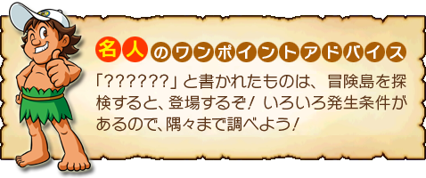

● Main Game
高橋名人を操り、さらわれたティナを救うため、冒険の旅をします。
● Extra Game
１人で遊ぶ「Single Play」、２人で遊ぶ「MultiPlay」があります。４つのミニゲームのいずれかを選択し、遊ぶことができます。
Play」、２人で遊ぶ「MultiPlay」があります。４つのミニゲームのいずれかを選択し、遊ぶことができます。
● Records
「MainGame」「ExtraGame」「NintendoWi-Fi ConnectionRanking」のそれぞれの記録を見ることができます。
● Credit
このゲームの制作スタッフを見ることができます。
